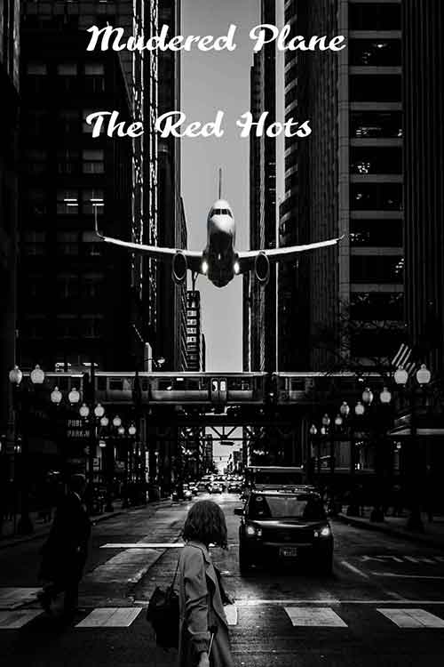

Alicea Heady's Portfolio
2018-2019
This is my Eaton RESA Portfolio, showing all my growth and improvments throughout the school year . As well as all of my accompolishments!

Personal Statement
I’m a current junior at Lansing Everett high school while attending the Eaton RESA program. This portfolio is to display all my best work throughout the year. I always had a passion for art and believe it’s very important to express yourself in a creative way. I maintained a 3.5 plus GPA for multiple years in a row and have a deep passion for political science.

Best of Gallery
The three following designs are my favorite pieces throughout the year. I really enjoyed making the art work.
“Water Paint”
This assignment was simply and painting demo with the class instructor Mr. Chad. Playing around the effects and using blur tool to create a cartoon looking image
“Movie Trailer”
This piece was a challenge for me because I had a difficult time using black and white value to create and sad or uplifting emotion. I tried using low contrast to make the image look like a tragedy is about to be happen.
Sunshine
This assignment was very difficult to create I had a very hard time trying to make certain areas appear to be closer or farther depending on placement
Arts 102 Design Gallery
Arts 102 consist of Balance, Unity and Rhyme designs. In the beginning of the school year we spent a lot of time creating artwork to capture each subject.

“The Reflection of Symmetry”
This piece was really for me to create and I wanted to use color to fit the fall season. The purpose of this work to combine sea animals and random animals out of their element. I want to add this image to my portfolio because it capture balance the best.
“Fire Wave”
The purpose this design is to use rhyme to create angry emotion. With the red and black really helps create that emotion. Even though it's really simple this design have lot of meaning behind it.
“Water Wheel”
by simply playing around and using certain effects I created the “Water Wheel”. The reason for the name is because the radial balance of the water dripping. I think this piece give the audience a calming emotion.
Arts 171 Photoshop Gallery
In this section displays all my Adobe Photoshop artwork. I’m extremely excited to show these pieces because I put a ton of time in effort in all my artwork but these are beyond amazing.
“Metro Detroit”
Definitely one of my most exciting assignment from the entire year! The purpose of the assignment was to create a poster to enter a contest for the Detroit car show. I really wanted to create something that looked really electric and cool. Going out of my comfort zone was a big goal for. After some I went back and refined some areas of the poster.
“Avant Garde”
I’m very proud of this piece because at first I had no clue or idea how to go about the project. I didn't think I could create something complete crazy and different for the Lansing Community College fashion show. With a lot of research and pointers from my peers I created a great work of art.
“Shape Creation”
I never took time out to learn different effects and tools throughout photoshop and finally I decided to learn something new. I watched a Youtube tutorial to create a cool looking image for put on display. Following the tutorial wasn't the easiest but I got the hang of it and learned perks about photoshop.
Contact & Connect
If you'd like to contact me at anytime or would simply like to view my work, my information is below.
Honors & Awards
Finally, here’s all my awards and accomplishments. May 2019, I receive my Eaton RESA certificate for Superior Commitment, As well as resume which represents all my accomplishments and awards.